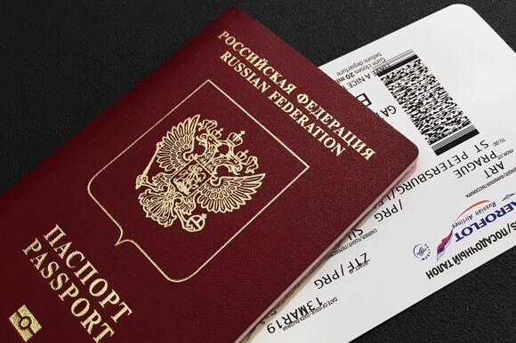

« НазадПутешествия под угрозой: почему аннулируют загранпаспорта Загранпаспорт — это основной документ, который позволяет гражданам пересекать границы и путешествовать по миру. Без него невозможно отправиться в большинство стран, а его аннулирование может привести к серьезным последствиям: отмене поездки, финансовым потерям и даже юридическим проблемам. Поэтому каждому путешественнику важно знать, по каким причинам загранпаспорт может быть аннулирован, и как этого избежать. Цель данной статьи — информировать о ключевых причинах аннулирования загранпаспорта, юридических аспектах этого процесса и дать практические рекомендации, которые помогут сохранить документ в действии. Мы рассмотрим основные причины аннулирования, законодательную базу, а также полезные советы для тех, кто часто путешествует. Основные причины аннулирования загранпаспортаАннулирование заграничного паспорта может происходить по различным основаниям и причинам. Рассмотрим основные и наиболее часто встречающиеся случаи:
Эти примеры являются лишь частью возможных причин для аннулирования заграничного паспорта. Важно помнить, что каждый случай индивидуален, и процедура аннулирования может различаться в зависимости от конкретной ситуации и требований законодательства той или иной страны. Истечение срока действияСрок действия заграничного паспорта действительно имеет ограничения. В зависимости от того, какой тип документа у вас имеется – обычный или биометрический, его срок действия будет составлять либо 5, либо 10 лет соответственно. По истечении данного периода ваш загранпаспорт автоматически теряет свою юридическую силу и становится недействительным. Однако стоит помнить о том, что для въезда во многие зарубежные страны требуется, чтобы срок действия вашего загранпаспорта был не меньше определенного времени после завершения вашей поездки. Обычно этот период варьируется от 3 до 6 месяцев. Если данное требование не выполняется, вам могут отказать во въезде в страну назначения. Изменение персональных данныхИзменение фамилии, имени или отчества, к примеру, после заключения брака, является одним из самых частых оснований для признания загранпаспорта недействительным. Помимо этого, паспорт также может быть признан утратившим силу и в случае корректировки даты либо места рождения его владельца. В любой из таких ситуаций необходимо будет оформить новый документ, содержащий актуальные персональные данные. Порча или утрата паспортаМеханические повреждения, такие как разрывы страниц, появление пятен, а также полное отсутствие отдельных страниц, могут стать причиной признания паспорта недействительным. Аналогичным образом утрата или кража этого важного документа также приводят к его аннулированию. Во всех этих случаях настоятельно рекомендуется незамедлительно обратиться в соответствующие миграционные службы с целью оформления и получения нового паспорта. Обнаружение ошибок в документеОпечатки или ошибки в персональных данных, а также некорректная информация, содержащаяся в чипе биометрического паспорта, могут привести к тому, что документ будет аннулирован. В случае обнаружения такой ошибки владельцу документа следует незамедлительно обратиться в соответствующие миграционные службы с целью внесения необходимых исправлений и восстановления действительности паспорта. Изменение гражданстваКогда человек получает гражданство другой страны или отказывается от гражданства той страны, которая выдала ему паспорт, это автоматически приводит к тому, что его прежний документ становится недействительным. В подобных ситуациях требуется оформление нового паспорта, который будет соответствовать новому гражданству этого человека. Решение государственных органовАннулирование заграничного паспорта может быть начато по решению судебных органов (к примеру, в ситуации, когда было совершено мошенничество при оформлении данного документа) либо со стороны миграционной службы (в частности, если возникают подозрения относительно участия владельца паспорта в незаконной деятельности). В подобных ситуациях заграничный паспорт утрачивает свою юридическую силу и не подлежит восстановлению. Смерть владельцаПосле того как будет официально подтверждено, что владелец заграничного паспорта умер, этот документ подлежит аннуляции. Данная мера является стандартной процедурой и применяется для предотвращения возможного использования данного документа третьими лицами без соответствующего разрешения. Юридические аспекты аннулирования загранпаспортаПроцесс аннулирования заграничного паспорта гражданина Российской Федерации регулируется действующим законодательством страны. Этот процесс включает в себя несколько ключевых юридических аспектов и процедурных моментов, которые необходимо учитывать при обращении с заявлением об аннулировании документа. В рамках данного рассмотрения мы подробно проанализируем основные положения законодательства, касающиеся процедуры аннулирования заграничного паспорта, а также определим ключевые моменты, связанные с правовыми последствиями данной процедуры для владельца документа. Законодательная базаВ России процесс выдачи и аннулирования заграничных паспортов регламентируется Федеральным законом «О порядке выезда из Российской Федерации и въезда в Российскую Федерацию». Данный законодательный акт устанавливает конкретные основания, по которым может быть произведено аннулирование заграничного паспорта гражданина. Кроме того, этот закон детально описывает процедуру, которой следует придерживаться при выполнении данного действия. Процедура аннулированияЗаграничный паспорт гражданина Российской Федерации может быть аннулирован различными государственными органами. К ним относятся миграционные службы, судебные органы, а также консульские учреждения, особенно если гражданин находится за пределами страны. Процедура аннулирования заграничного паспорта предусматривает несколько этапов. Сначала необходимо подать соответствующее заявление с указанием причин для аннулирования документа. Затем уполномоченные органы проводят тщательную проверку всех предоставленных документов. После этого принимается решение о прекращении действия заграничного паспорта. В отдельных ситуациях заграничный паспорт может быть аннулирован без предварительного уведомления его владельца. Это возможно, например, при наличии соответствующего судебного решения. Последствия аннулированияАннулирование заграничного паспорта приводит к ряду серьезных последствий для его владельца. Прежде всего, человек лишается возможности легально покидать пределы своей страны и въезжать в другие государства, так как аннулированный документ больше не считается действительным для пересечения границы. Во-вторых, владельцу придется пройти процедуру получения нового загранпаспорта, которая может потребовать значительного времени. Это включает сбор необходимых документов, подачу заявления, ожидание обработки запроса и изготовление самого паспорта. В-третьих, в зависимости от обстоятельств аннулирования паспорта возможны дополнительные санкции. Например, если паспорт был утрачен вследствие небрежности или халатности со стороны владельца, ему могут грозить штрафы или иные административные меры ответственности. Практические рекомендации для путешественниковДля того чтобы предотвратить возможные проблемы, связанные с аннулированием вашего заграничного паспорта, важно соблюдать следующие рекомендации:
Следуя этим простым советам, вы сможете избежать многих неприятностей, связанных с аннулированием загранпаспорта, и обеспечить себе спокойную и безопасную поездку. Проверка срока действия паспортаПеред каждой поездкой необходимо тщательно проверять срок действия вашего заграничного паспорта. Рекомендуется начинать проверку как минимум за 6–12 месяцев до предполагаемой даты путешествия. Это важно для того, чтобы успеть оформить новый документ, если срок его действия подходит к концу. Также следует учитывать требования тех стран, которые вы планируете посетить, так как многие государства предъявляют особые условия к минимальному сроку действия загранпаспорта на момент въезда и выезда с их территории. Своевременное обновление данныхЕсли вы изменили свою фамилию, имя или любые другие персональные данные, вам необходимо заменить ваш заграничный паспорт. Для этого обратитесь в соответствующие миграционные службы, чтобы внести необходимые изменения и получить новый документ. Бережное обращение с паспортомИспользуйте специальные защитные обложки для вашего паспорта, чтобы предотвратить возможные повреждения. Храните паспорт в надежном и безопасном месте, недоступном для посторонних лиц. Старайтесь избегать любых механических воздействий, которые могут привести к разрывам страниц, появлению пятен или другим видам повреждений. Действия при утере или кражеЕсли ваш паспорт был утерян или украден, вам следует незамедлительно обратиться в ближайшее отделение полиции и получить справку об утрате или краже документа. После этого необходимо подать заявление о выдаче нового паспорта в соответствующие миграционные службы вашего региона. Проверка данных в паспортеКогда вы получаете заграничный паспорт, тщательно проверьте документ на предмет наличия ошибок. Если обнаруживаются какие-либо ошибки, незамедлительно обратитесь к соответствующим органам для их устранения и внесения необходимых корректировок. Информирование о смене гражданстваЕсли вы стали гражданином другой страны или отказались от гражданства той страны, которая выдала ваш текущий паспорт, вам необходимо своевременно уведомить соответствующие миграционные службы. Это важно для соблюдения правовых норм и избежания возможных юридических последствий. После того как вы официально изменили свое гражданство, вам следует получить новый паспорт, который будет соответствовать вашему новому гражданству. Новый документ удостоверит вашу личность и подтвердит ваше текущее правовое положение. Пожалуйста, обратите внимание, что процедура получения нового паспорта может различаться в зависимости от законодательства вашей новой страны проживания, поэтому рекомендуется ознакомиться с местными требованиями и правилами. Использование копий паспортаЗаграничный паспорт – важный документ, который необходимо беречь как зеницу ока. Хранение его цифровых копий может быть полезным не только при утере оригинального документа, но и в повседневной жизни. Например, когда вы планируете поездку за границу, вам могут понадобиться данные паспорта для бронирования отеля, покупки билетов на самолет или аренды автомобиля. Для этого рекомендуется заранее сделать несколько качественных фотографий всех страниц с важной информацией (особенно страницы с фотографией и личными данными) и сохранить их в электронном виде. Также можно отсканировать эти страницы и хранить их в облачном хранилище, доступ к которому будет возможен даже без интернета. Помимо электронных копий, полезно иметь также бумажную копию загранпаспорта. Она может пригодиться в случае отсутствия доступа к интернету или мобильным устройствам. Рекомендуется носить эту копию с собой вместо оригинала, чтобы минимизировать риск его утраты или повреждения. Таким образом, использование цифровых и бумажных копий загранпаспорта помогает избежать неприятных ситуаций, связанных с потерей оригинала, а также значительно упрощает многие процессы, связанные с планированием путешествий и взаимодействием с различными службами во время поездки. Часто задаваемые вопросы (FAQ)Может ли быть аннулирован загранпаспорт без уведомления? Да, в определённых ситуациях паспорт действительно может быть аннулирован без предварительного уведомления его владельца. Например, это возможно при наличии соответствующего решения суда либо по инициативе миграционных органов. В таких случаях владелец паспорта может не получить заблаговременное уведомление о предстоящем аннулировании документа. Что делать, если паспорт аннулирован за границей? Если ваш паспорт был аннулирован во время пребывания за границей, вам следует предпринять следующие шаги:
Таким образом, своевременное обращение в консульство поможет вам быстро решить проблему и безопасно вернуться домой. Можно ли восстановить аннулированный паспорт? Аннулированный паспорт не может быть восстановлен. Вместо этого необходимо оформить и получить новый документ. Как проверить, действителен ли мой паспорт? Обратитесь в миграционные службы или воспользуйтесь онлайн-сервисами. ЗаключениеАннулирование заграничного паспорта – это действительно серьезная проблема, способная существенно повлиять на ваши планы относительно путешествий. Тем не менее, понимание основных причин, по которым паспорт может быть аннулирован, а также следование нескольким простым рекомендациям позволит вам избежать подобных неприятностей. Во-первых, регулярно контролируйте срок действия вашего заграничного паспорта. Паспорт считается недействительным, когда истекает указанный в нем период времени, поэтому важно следить за датами и заблаговременно обращаться за продлением документа. Кроме того, если у вас произошли изменения личных данных (например, смена фамилии), обязательно обновите свой загранпаспорт. Использование устаревшего документа может привести к проблемам как при пересечении границы, так и во время пребывания за рубежом. Также помните о бережном обращении с вашим документом. Загранпаспорт должен находиться в надежном месте, защищенном от повреждений, влаги и других факторов, которые могут сделать его непригодным для использования. Перед каждой новой поездкой удостоверьтесь, что ваш загранпаспорт является действующим, и при возникновении сомнений лучше всего обратиться за дополнительной информацией в соответствующие миграционные органы вашей страны. Следуя этим несложным правилам, вы сможете путешествовать уверенно и без лишних забот! Срочное оформление загранпаспорта в паспортно-визовом центре «Север»Нужен загранпаспорт быстро и без хлопот? Обращайтесь в паспортно-визовый центр «Север»! Мы специализируемся на срочном оформлении загранпаспортов и помогаем нашим клиентам уже более 20 лет. Почему выбирают нас?
Не откладывайте свои планы на потом! Доверьтесь опытным специалистам и получите загранпаспорт без задержек. 📞 Звоните: +7 (925) 585-41-95 Паспортно-визовый центр «Север» — ваш надежный партнер в оформлении документов!
|
Комментарии
Комментариев пока нет